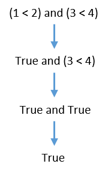
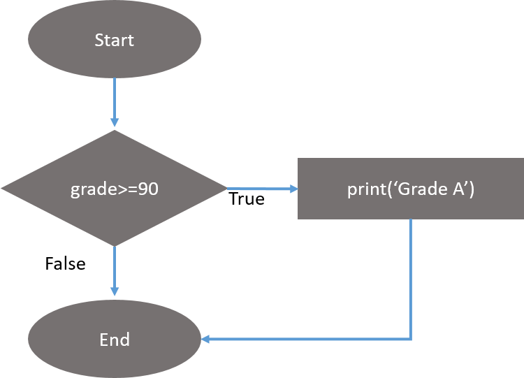
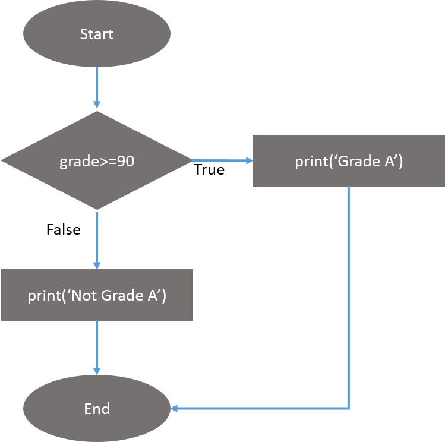
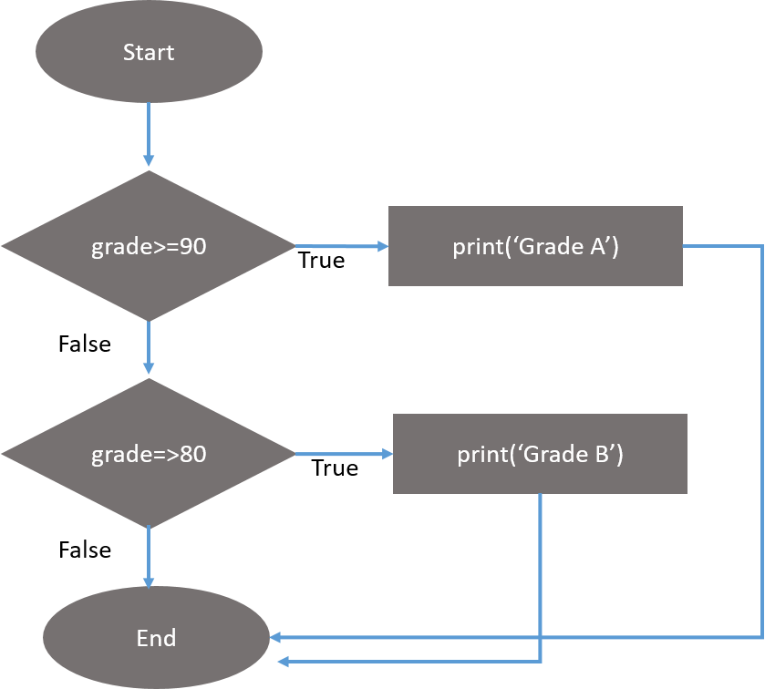
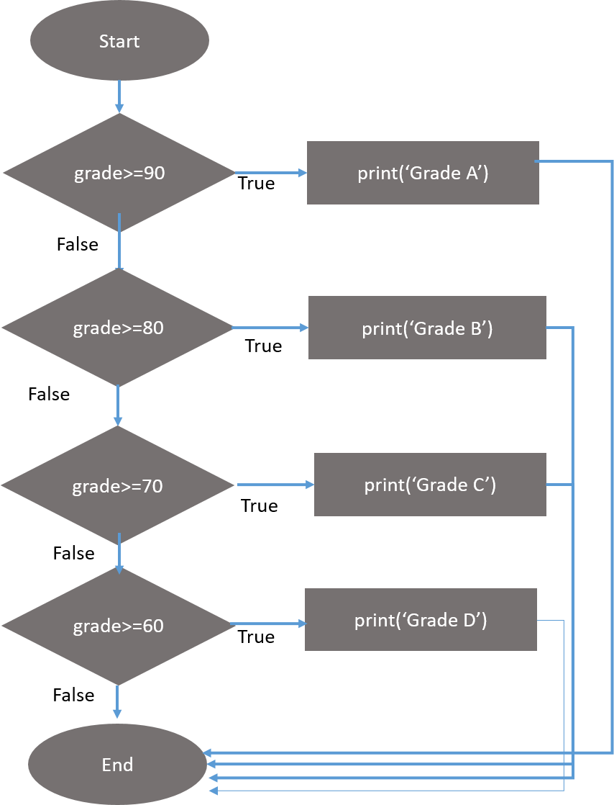
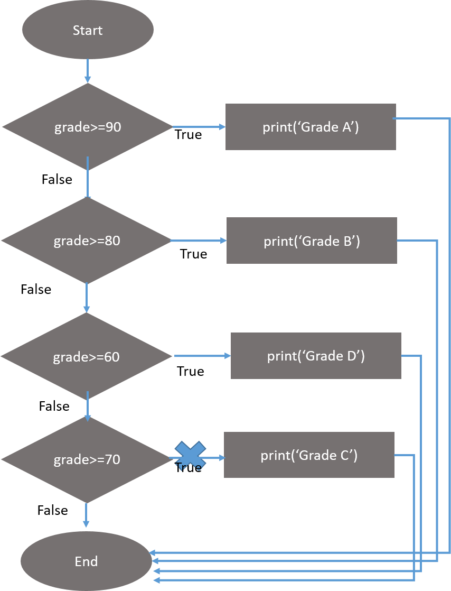

Flow Control¶
So you know the basics of individual instructions and that a program is just a series of instructions. But the real strength of programming isn’t just running (or executing) one instruction after another. Based on how the expressions evaluate, the program can decide to skip instructions, repeat them, or choose one of several instructions to run.
In fact, you almost never want your programs to start from the first line of code and simply execute every line, straight to the end. Flow control statements can decide which Python instructions to execute under which conditions.
These flow control statements directly correspond to the symbols in a flowchart, so we’ll provide flowchart versions of the code discussed in this chapter. Figure below shows a flowchart for what to do if your alarm rings in the morning. Follow the path made by the arrows from Start to End.

In a flowchart, there is usually more than one way to go from the start to the end. The same is true for lines of code in a computer program. Flowcharts represent these branching points with diamonds, while the other steps are represented with rectangles. The starting and ending steps are represented with oval.
But before you learn about flow control statements, you first need to learn how to represent those yes and no options, and you need to understand how to write those branching points as Python code. To that end, let’s explore Boolean values, comparison operators, and Boolean operators.
Boolean Values¶
While the integer, floating-point, and string data types have an unlimited number of possible values, the Boolean data type has only two values: True and False. When typed as Python code, the Boolean values True and False lack the quotes you place around strings, and they always start with a capital T or F, with the rest of the word in lowercase.
Like any other value, Boolean values are used in expressions and can be stored in variables.
var = True
var
True
If you don’t use the proper case or you try to use True and False for variable names, Python will give you an error message.
true
---------------------------------------------------------------------------
NameError Traceback (most recent call last)
<ipython-input-3-724ba28f4a9a> in <module>
----> 1 true
NameError: name 'true' is not defined
True = 2+2
File "<ipython-input-4-22a5350c6d9a>", line 1
True = 2+2
^
SyntaxError: can't assign to keyword
Comparison Operators¶
Comparison operators compare two values and evaluate down to a single Boolean value.
Operation |
Description |
|---|---|
|
|
|
|
|
|
|
|
|
|
|
|
These operators evaluate to True or False depending on the values you give them.
Difference between == & = Operator¶
You might have noticed that the == operator (equal to) has two equal signs, while the = operator (assignment) has just one equal sign. It’s easy to confuse these two operators with each other.
Just remember these points: The == operator (equal to) asks whether two values are the same as each other. The = operator (assignment) puts the value on the right into the variable on the left.
To help remember which is which, notice that the == operator (equal to) consists of two characters, just like the != operator (not equal to) consists of two characters.
You’ll often use comparison operators to compare a variable’s value to some other value. We’ll see more examples of this later when you learn about flow control statements.
Boolean Operators¶
The three Boolean operators (and, or, and not) are used to compare Boolean values. Like comparison operators, they also evaluate these expressions down to a Boolean value. Let’s explore these operators in detail, starting with the and operator.
and operator¶
In the truth table given below, T means True and F means False. and operator evaluates to True if both of the two Boolean values are True. If either of them is False, it evaluates to False.
A |
B |
A and B |
|---|---|---|
F |
F |
F |
F |
T |
F |
T |
F |
F |
T |
T |
T |
Play around with and operator into your Jupyter Notebook’s cell and check out the output.
True and True
True
True and False
False
or operator¶
or operator evaluates to True if either of the two Boolean values is True. If both are False, it evaluates to False.
A |
B |
A or B |
|---|---|---|
F |
F |
F |
F |
T |
T |
T |
F |
T |
T |
T |
T |
False or True
True
False or False
False
The and & or operators always take two Boolean values (or expressions), so they’re considered binary operators.
not operator¶
Unlike and and or, the not operator operates on only one Boolean value (or expression). The not operator simply evaluates to the opposite Boolean value i.e. it evaluates an expression to True if the Boolean values is Falseand vice versa.
A |
not A |
|---|---|
F |
T |
T |
F |
not False
True
Much like using double negatives in speech and writing, you can nest not operators, though there’s never not no reason to do this in real programs.
not not not not True
True
Boolean and Comparison Operators¶
Since the comparison operators evaluate to Boolean values, you can use them in expressions with the Boolean operators.
Recall that the and, or, and not operators are called Boolean operators because they always operate on the Boolean values True and False. While expressions like 1 < 2 aren’t Boolean values, they are expressions that evaluate down to Boolean values. Try using some Boolean expressions that use comparison operators in your computer.
(1 < 2) and (3 < 4)
True
(4 < 5) and (7 < 6)
False
(1 == 2) or (2 == 2)
True
The computer will evaluate the left expression first, and then it will evaluate the right expression. When it knows the Boolean value for each, it will then evaluate the whole expression down to one Boolean value. You can think of the computer’s evaluation process for (1 < 2) and (3 < 4) as shown in figure below

You can also use multiple Boolean operators in an expression, along with the comparison operators.
2 + 2 == 4 and not 2 + 2 == 5 and 2 * 2 == 2 + 2
True
Order of precedence
The Boolean operators have an order of operations just like the math operators do. After all math and comparison operators are evaluated, Python evaluates the not operators first, then the and operators, and then the or operators.
Elements of Flow Control¶
Flow control statements often start with a part called the condition, and all are followed by a block of code called the clause. Before you learn about Python’s specific flow control statements, let’s cover what a condition and a block are.
Conditions¶
The Boolean expressions you’ve seen so far could all be considered conditions, which are the same thing as expressions; condition is just a more specific name in the context of flow control statements. Conditions always evaluate down to a Boolean value, True or False. A flow control statement decides what to do based on whether its condition is True or False, and almost every flow control statement uses a condition.
Blocks of Code¶
Lines of Python code can be grouped together in blocks. You can tell when a block begins and ends by looking at the indentation of the lines of code. There are three rules for blocks.
Blocks begin when the indentation increases.
Blocks can contain other blocks.
Blocks end when the indentation decreases to zero or to a containing block’s indentation.
Blocks are easier to understand by looking at some indented code, so let’s find the blocks in part of a small game program, shown below:
x = 7
if x < 10:
print('Less than 10')
if x > 5:
print('Greater than 5')
else:
print('Less than 5')
The first block of code starts at the line print('Less than 10') and contains all the lines after it. Inside this block is another block, which has only a single line in it: print('Greater than 5'). The third and last block is also one line long: print('Less than 5').
If you don’t follow the indentation (rules for blocks) you might get an error as follows:
x = 7
if x < 10:
print('Less than 10')
if x > 5:
print('Greater than 5')
else:
print('Less than 5')
File "<ipython-input-1-e8f12391e9fb>", line 3
print('Less than 10')
^
IndentationError: expected an indented block
The error message tells us that the line 3 (i.e - print('Less than 10')) has not used proper indentation.
Program Execution¶
The program execution (or simply, execution) is a term for the current instruction being executed. If you print the source code on paper and put your finger on each line as it is executed, you can think of your finger as the program execution.
Not all programs execute by simply going straight down, however. If you use your finger to trace through a program with flow control statements, you’ll likely find yourself jumping around the source code based on conditions, and you’ll probably skip entire clauses.
Flow Control Statements¶
Now, let’s explore the most important piece of flow control: the statements themselves. The statements represent the diamonds you saw in the flowchart above, and they are the actual decisions your programs will make.
if statement¶
The most common type of flow control statement is the if statement. An if statement’s clause (that is, the block following the if statement) will execute if the statement’s condition is True. The clause is skipped if the condition is False.
In plain English, an if statement could be read as, “If this condition is true, execute the code in the clause.” In Python, an if statement consists of the following:
The
ifkeywordA condition (that is, an expression that evaluates to
TrueorFalse)A colon(:)
Starting on the next line, an indented block of code (called the
ifclause)
For example, let’s say you have some code that checks which grade is scored by a person. (Pretend name was assigned some value earlier.)
if grade >= 90:
print('Grade A')
All flow control statements end with a colon and are followed by a new block of code (the clause). This if statement’s clause is the block with print('Grade A'). The flowchart of this code would look like.

else statement¶
An if clause can optionally be followed by an else statement. The else clause is executed only when the if statement’s condition is False. In plain English, an else statement could be read as, “If this condition is True, execute this code. Or else, execute that code.” An else statement doesn’t have a condition, and in code, an else statement always consists of the following:
The
elsekeywordA colon(:)
Starting on the next line, an indented block of code (called the
elseclause)
Returning to above example, let’s look at some code that uses an else statement to check if the scored grade is Grade A or not.
if grade>=90:
print('Grade A')
else:
print('Not Grade A')

elif statement¶
While only one of the if or else clauses will execute, you may have a case where you want one of many possible clauses to execute. The elif statement is an “else if” statement that always follows an if or another elif statement. It provides another condition that is checked only if all of the previous conditions were False. In code, an elif statement always consists of the following:
The
elifkeywordA condition (that is, an expression that evaluates to
TrueorFalse)A colon(:)
Starting on the next line, an indented block of code (called the
elifclause)
Let’s add an elif to our grade checker to see this statement in action.
if grade>=90:
print('Grade A')
elif grade>=80:
print('Grade B')
This time, you check if the grade is more than or equal to 90 means that student got Grade A , and the program will tell something different for different condition. You can see the flowchart for this in the figure below.

The elif clause executes if grade>=80 is True and grade>=90 is False. However, if both of the conditions are False, then both of the clauses are skipped. It is not guaranteed that at least one of the clauses will be executed.
When there is a chain of elif statements, only one or none of the clauses will be executed. Once one of the statements conditions is found to be True, the rest of the elif clauses are automatically skipped.
Lets add two more elif statements to check grade of a student with different answers based on their grade.
if grade>=90:
print('Grade A')
elif grade>=80:
print('Grade B')
elif grade>=70:
print('Grade C')
elif grade>=60:
print('Grade D')
Figure shows the flowchart for this.

The order of the elif statements does matter, however. Let’s rearrange them to introduce a bug. Remember that the rest of the elif clauses are automatically skipped once a True condition has been found, so if you swap around some of the clauses in code above, you run into a problem. Change the code to look like the following.
if grade>=90:
print('Grade A')
elif grade>=80:
print('Grade B')
elif grade>=60:
print('Grade D')
elif grade>=70:
print('Grade C')
Say the grade variable contains the value 74 before this code is executed. You might expect the code to print the string 'Grade C'. However, because the grade>=60 condition is True (after all, 74 is greater than 60), the string 'Grade D' is printed, and the rest of the elif statements are automatically skipped. Remember, at most only one of the clauses will be executed, and for elif statements, the order matters!
Notice how the diamonds for grade>=60 and grade>=70 are swapped.

Optionally, you can have an else statement after the last elif statement. In that case, it is guaranteed that at least one (and only one) of the clauses will be executed. If the conditions in every if and elif statement are False, then the else clause is executed. For example,
if grade>=90:
print('Grade A')
elif grade>=80:
print('Grade B')
else:
print('Never give up')
In plain English, this type of flow control structure would be, “If the first condition is true, do this. Else, if the second condition is true, do that. Otherwise, do something else.”
When you use all three of these statements together, remember these rules about how to order them to avoid bugs. First, there is always exactly one if statement. Any elif statements you need should follow the if statement. Second, if you want to be sure that at least one clause is executed, close the structure with an else statement.
Conclusion¶
By using expressions that evaluate to True or False (also called conditions), you can write programs that make decisions on what code to execute and what code to skip.
These flow control statements will let you write much more intelligent programs.
Questionaire¶
List down all the Boolean Operator & their truth tables?
As there is precedence of math operators, what is the order of the Boolean Operators?
Does
elsestatement have conditions to check?What is the minimum and maximum number of
elsestatement andelifstatement that can be used in program?Can we use
elifbeforeifstatement?
Exercise¶
Write a program to check if a given year is leap year or not?